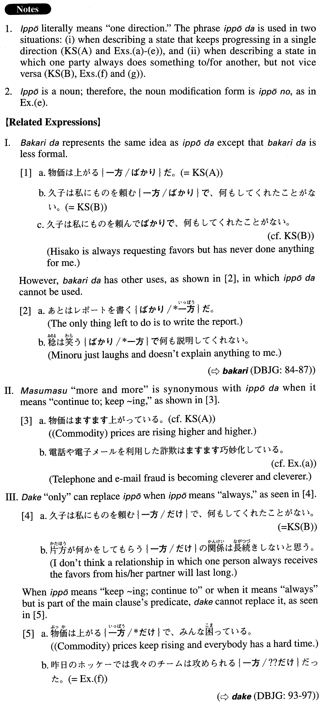

←
DoJG
→
一方（だ）
(A. 146)
Example sentences
(ksa).
物価は上げる
一方だ
。
(Commodity) prices are rising steadily.
(ksb).
久子は私にものを頼む
一方で
、何もしてくれたことがない。
Hisako is always requesting favours but has never done anything for me.
(a).
電話や電子メールを利用した詐欺は巧妙化する
一方だ
。
Telephone and email fraud is becoming cleverer and cleverer.
(b).
この市は急増した人口にインフラ整備が追いつかず、犯罪も増える
一方だ
。
Improvements to the infrastructure in this city have not kept pace with the sudden population increase, and crime keeps increasing as well.
(c).
ビジネスのグローバル化が進む今日、英語によるコミュニケーション能力の重要性は増す
一方だ
。
English communication skills are becoming more and more important today as businesses continue to globalize.
(d).
サッカー熱は高まる
一方だ
が、少年サッカーでひざの故障を起こすケースも増えている。
People's enthusiasm for soccer is growing steadily, but the number of (cases of) knee injuries in youth soccer is also growing.
(e).
深刻化する
一方
の医師不足に早急に何らかの対策が必要だ。
We need some immediate countermeasures for the shortage of doctors, which is just getting worse.
(f).
昨日のホッケーでは我々のチームは攻められる
一方だった
。
In yesterday's hockey match, our team was always on the defensive.
(g).
私たちはいつも子供や犬のことでお隣に迷惑をかける
一方
なので、申し訳なく思う。
We feel sorry for our next door neighbours because our children and our dog are always giving them trouble.
Formation
(i)
Vinformal nonpast
一方だ
悪くなる
一方だ
Something only worsens
(ii)
Vinformal nonpast
一方
のNoun
増える
一方
の財政赤字
The fiscal deficit, which continues to increase
